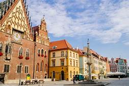
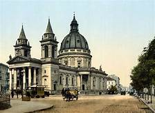
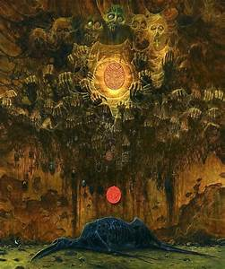
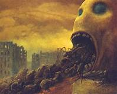
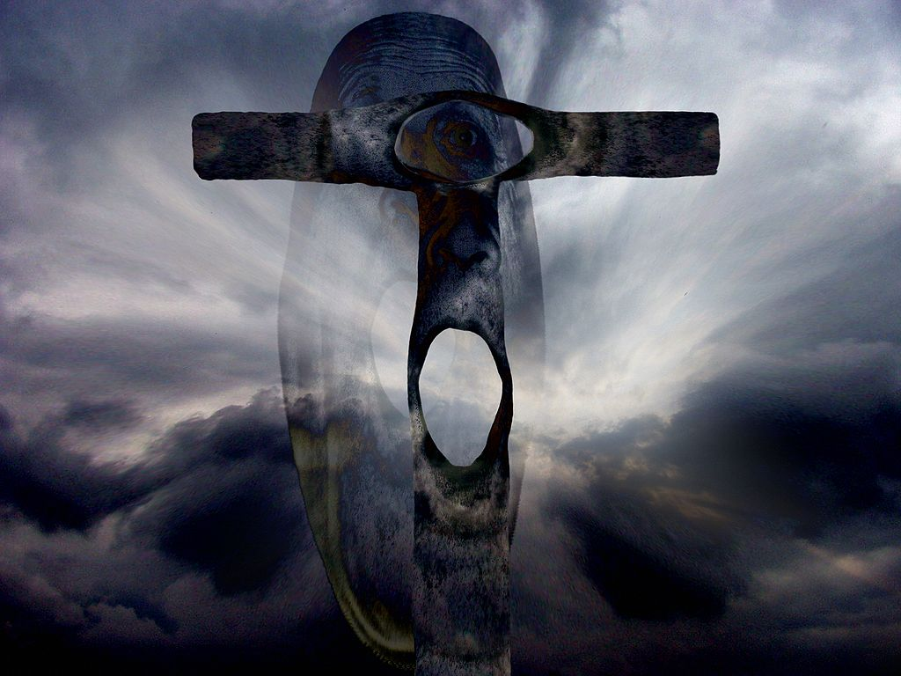

His early life
In 1929 he was born in the small town of Sanok, Poland. Growing up in Poland during the second world war, Beksinski experienced some trully horrifying events. This could possibly be correlated to the Jewish Ghetto which was set up in his home town. This may give us a insight as to why all his humanoid figures in his paintings appear emaciated. He studied architecture in Krakow as a young man. When he completed his studies Beksinski got a job as a construction site supervisor. He hated this job and it pushed him towards the arts.
Artistic beginnings
He started out as a photographer and quickly gained notoriety for his surreal and odd photos. At the time photography was all about capturing the moment as it truly was, and Beksinski never conformed to this style. Beksinski opposed this by photographing people in unnatural positions and obscuring body parts. During this time he moved with his family to Warsaw.
His start in painting
Once he had made a suitable stir in the photographic scene he moved on to painting. He believed he could not express himself through the medium of photography. He freely donated his photographs to a museum, and began painting with no formal art training and most of his paintings draw from his architectural background.
His attitude
Despite his somber and grotesque paintings the Beksinski has stated that some of his images are misunderstood and downright humorous, in my oppinion many of his paintings are a scathing satire of religion and mob mentality. We can see this in his paintings that include hordes of people dying at the hands of another group or entity. In this respect I agree that some of the exagerted images could appear comedic in their absurdity, However I feel that the dark tones do prevail in most of his works.
His later life
He kept painting for decades with his fantastic period being his most famous. When digital art became more promenant he used programs such as photoshop to enhance his images. This didn't last long as he recognised the limitations of the software. Sadly on the 21st of February 2005 he died at the hands of his caretakers son. What a tragedy.
